The CMOS full adder output sum is 1, if one or three inputs are and the carry output is
and the carry output is  , if two or more inputs are 1.
, if two or more inputs are 1.
Draw the truth table for full adder circuit.
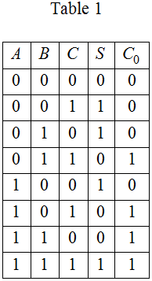
The CMOS full adder output sum is 1, if one or three inputs are and the carry output is , if two or more inputs are 1.
Draw the truth table for full adder circuit.
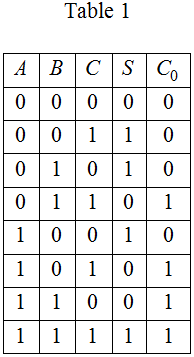
From Table 1, write the Boolean expression for sum output.
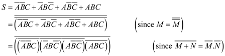
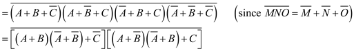
Draw the pull-up network for sum output of full adder.
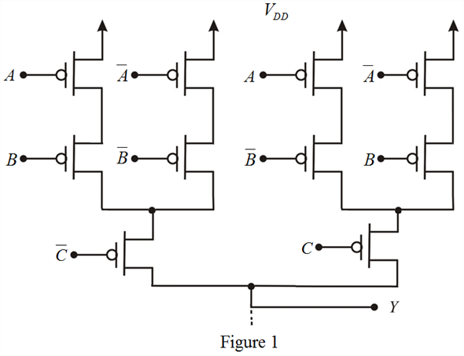
The pull-down network is dual of pull-up network.
Draw the pull-down network for sum output of full adder.
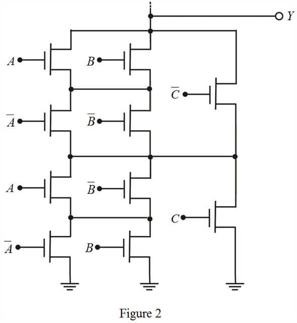
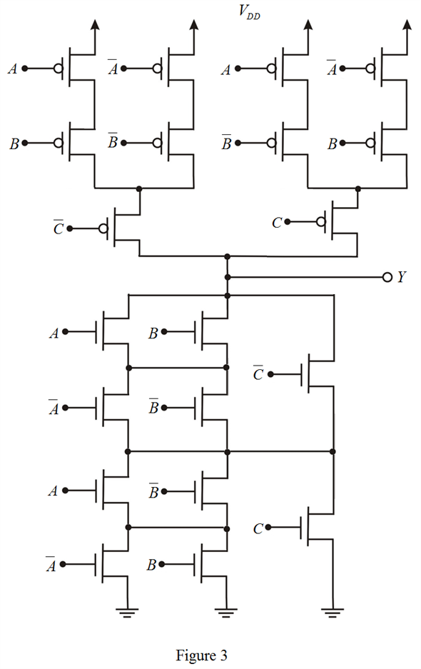
Thus, the complete CMOS realization for sum output of full adder is sketched as shown in Figure 3.
From Table 1, write the Boolean expression for carry output.
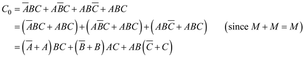
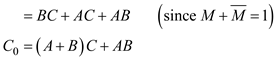
Further simplification as follows,
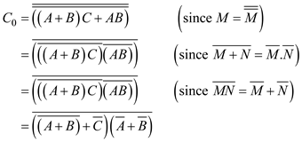
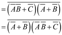
Draw the pull-up network for carry output of full adder.
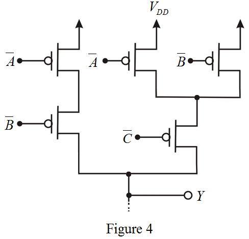
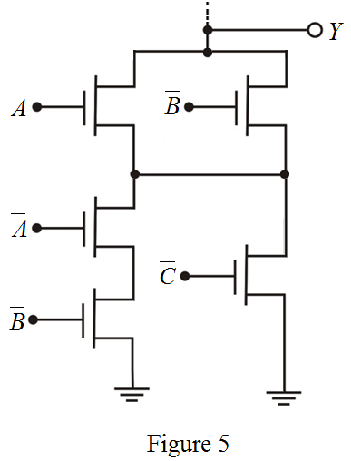
Sketch the complete CMOS realization for carry output of full adder.
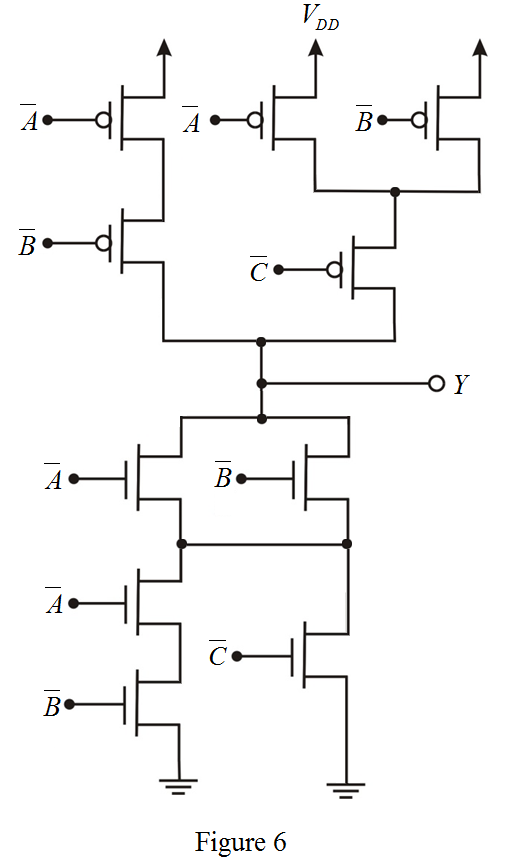
Thus, the complete CMOS realization for carry output of full adder is sketched as shown in Figure 6.